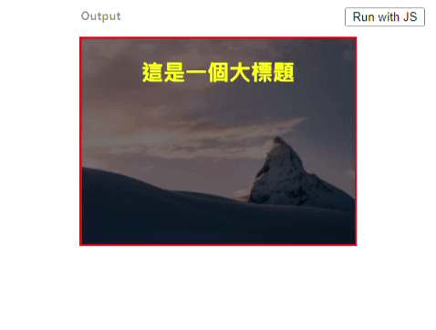

Source Url
Goal
本章整體要達成的效果，鼠標滑入一張圖片，會有隱藏的文字區塊漸漸出現的效果。
學習點
1. 解決圖片在垂直方向會留奇怪空白區塊的問題
我們可以用一個簡單的例子，還原圖片和他的父層區塊有奇怪的留白區塊
ex:
1 | // --- View --- // |
上面的結果會長下面這樣
解決方法，在這一篇文章中有說了兩種解決方式，其中一種方式，就是 Amos 在課堂上提到的用定位的方式
solution 1 : vertical-align 解法
我們只要在 img 裡面加上 vertical-align 的屬性就可以解決囉
1 | .box img { |
solution 2: 將 img 改成 block 元素
1 | .box img { |
使用其中一個解法後，結果會像下面這樣
2. hover 效果觸發時機為 父層被摸到，子層做事情
主要設計 hover 觸發時機要設定在父層身上，當使用者鼠標移動到 .item 的區塊時，它的子層 .txt 的特效會出現，所以， hover 觸發的效果是綁定在父層 .item 上。
1 | .txt { |
3. 用 :after 偽元素來實現，當 hover 時，區塊內的文字出現下底線
這邊就是為區塊加入底線，但是，不是直接對該區塊加入 border-bottom 的方式呈現，而是用該區塊的偽元素 :after 來呈現。
方法如下
1 | .item .txt h2:after { |
加入了以上的效果，可以達到下面的畫面
4. 當 hover 進去，區塊內的下底線，會由左往右長的特效
接下來，我們想要達到，當使用者滑入父層 .item 時，上面那一點所寫的標題下的下底線，會有由左至右長出來的效果，像下面這樣

主要達成這種效果的關鍵點就是偽元素的 width 屬性，讓它的 width 由 0% 長到 100% 來達成以上的效果。
那就來改寫一下第 3 點中偽元素的 css 內容
1 | .item .txt h2:after { |
經由以上短短的程式碼可以達成上面的動畫效果囉。
Final Result
CSS 快速寫法
1. margin: 10px 0;
簡寫為 m10-0 然後按 tab，就可以變成 margin: 10px 0 囉。